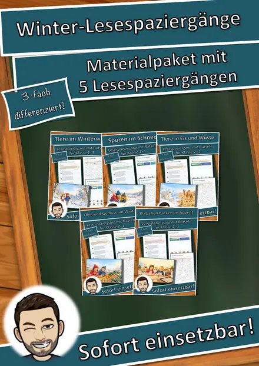
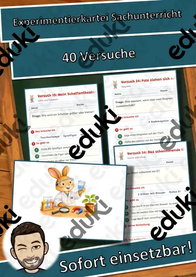

Lesespur: Das Schneelabor – Lesespurgeschichte mit Rätseln (Klasse 3)
Begib dich mit deiner Klasse auf eine spannende Lesespur voller Winter-Experimente! Die Freunde Lina und Timo bauen an einem verschneiten Tag ein kleines Schnee-Labor auf und gehen von Versuch zu Versuch – vom Forschertisch über das Fangbrett, die Lupenstation, das Thermometer, die Schneesäule, den Presstisch und die Farbprobe bis zur Ergebnistafel. Ganz nebenbei entdecken die Kinder, woraus Schnee besteht, warum er weiß ist und warum eine Schneedecke wärmt. Am Ende jedes Abschnitts verrät ein Hinweis den nächsten Ort auf dem Labor-Plan – nur wer richtig liest und mitdenkt, findet den Weg und sammelt alle geheimen Buchstaben zum Lösungswort.
Die perfekte Lesespur für den WINTER: Sie verbindet motivierendes, sinnentnehmendes Lesen mit echtem Sachwissen über Schnee, Eis und Wasser und schult zugleich das genaue Arbeiten. Das Material ist SOFORT EINSETZBAR und in DREI DIFFERENZIERUNGSSTUFEN (leicht ★ / mittel ★★ / schwer ★★★) angelegt, sodass alle Kinder einer Klasse am selben Thema arbeiten können.WICHTIG: Das komplette Material ist sowohl in FARBE als auch in SCHWARZ-WEISS enthalten – ideal zum Sparen von Druckkosten.DAS IST ENTHALTEN
- Lesespurgeschichte in 3 Niveaus (leicht, mittel, schwer)
- farbiger Labor-Plan als Suchkarte
- Hörverstehen mit QR-Code zur MP3 (Kinder hören selbstständig mit Kopfhörern)
- vier Aufträge auf dem Weg: ein Verbinde-Rätsel, ein Schnee-Quiz, eine Rechenaufgabe und ein Steckbrief
- Rätselseite (Wörter-Suchsel + Wissensfragen)
- Ausmalbild zum Thema
- ausführliches Lösungsblatt für die Lehrkraft
- alles zusätzlich als komplette Schwarz-Weiß-VarianteSO FUNKTIONIERT DIE LESESPURDie Kinder lesen ab START, entnehmen dem Text einen Hinweis auf einen Ort im Schnee-Labor, suchen ihn auf dem Plan und lesen bei dieser Station weiter. An jeder richtigen Station gibt es einen Sammelbuchstaben. Eingebaute Sackgassen (Garderobe, Heizung, Papierkorb, Besenkammer) dienen der Selbstkontrolle und machen deutlich, dass diese zwar zum Zimmer gehören, aber nicht zum Experiment. Am Ende werden die gesammelten Buchstaben umgestellt und ergeben ein geheimes Lösungswort. (Die Lösungen sind selbstverständlich nur im Lösungsblatt für die Lehrkraft enthalten.)INHALTLICHER SCHWERPUNKTSchnee und Eis erforschen: dass eine Schneeflocke aus winzigen, sechsstrahligen Eisformen besteht, warum man sie am besten auf dunklem, kaltem Grund und unter der Lupe betrachtet, warum Schnee weiß aussieht, obwohl Eis durchsichtig ist, warum eine lockere Schneedecke wie eine warme Decke wirkt und den Frost abhält, und warum feuchter Schnee klebt und trockener zerfällt. Das Material stellt die Zusammenhänge sachlich und kindgerecht dar und lädt zu einfachen eigenen Versuchen ein.ABGEDECKTER LEHRPLAN (Klasse 3-4)
- Sachunterricht/Physik – Naturphänomene und Stoffe: Wasser, Eis und Schnee, die Zustände des Wassers, Wärme und Kälte, genaues Beobachten und Experimentieren.
- Deutsch – Lesen mit Texten und Medien umgehen: Lesestrategien anwenden, Texten gezielt Informationen entnehmen, sinnentnehmend und selektiv lesen; Selbstkontrolle und Lesemotivation durch die Lesespur; Zuhören: einem Sachhörtext konzentriert folgen (Hörverstehen mit MP3).
- Mathematik – Rechnen im Sachzusammenhang (Zahlen rund um das Schnee-Labor).
- Fächerübergreifend / Kompetenzen: naturwissenschaftliches Verständnis, genaues Beobachten und Vergleichen, selbstständiges Arbeiten, Konzentration und Ausdauer, kreatives Gestalten (Ausmalbild).
Geeignet für Freiarbeit, Stationenlernen, Vertretungsstunden, Wochenplan und Homeschooling – besonders passend zur Jahreszeit WINTER. Klassenstufe 3-4 (differenziert einsetzbar auch in angrenzenden Jahrgangsstufen).
Ähnliche Materialien

Materialpaket Schnee, Eis und Wintersport für die 3. Klasse: 10 Lesespurgeschichten mit Rätselaufgaben (Rodelbahn, Eisstock, Schneelabor & mehr)

Lesespur: Weiß wie der Schnee – Lesespurgeschichte mit Rätseln (Klasse 3)

Materialpaket Winter-Lesespaziergänge für Klasse 2–4: 5 Lesespaziergänge mit Rätseln, 3-fach differenziert (Winterwald, Spuren im Schnee, Plätzchen & mehr)

Winter-Lesewelten Schnee und Eis – Differenziertes Lesetraining für die Grundschule (Grundschule, Klasse 1–3)

Wimmel-Werkstatt Tiere im Winter Wimmel-Werkstatt Tiere im Winter – Einheit 3: Tierspuren und Winterfell im Schnee – Spr

Experimentierkartei Sachunterricht: 40 Versuche

Lesespur: Das Thermometer – Lesespurgeschichte mit Rätseln (Klasse 8)